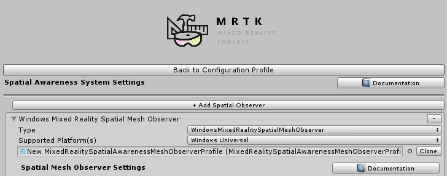

空间感知 Spatial awareness

空间感知系统在混合现实应用中提供真实世界的环境感知。当在微软HoloLens上推出时，空间感知提供了一个网格集合，代表了环境的几何形状，允许全息图和真实世界之间引人注目的互动。
Note
此时，混合现实工具包并没有像HoloToolkit中最初包装的那样，附带空间理解算法。空间理解通常包括转换空间网格数据以创建简化版本 和/或 分组网格数据，如平面、墙壁、地板、天花板等。
入门指南
添加对空间感知的支持需要混合现实工具包的两个关键组件:空间感知系统(Spatial Awareness system)和受支持的platform provider。
启用空间感知系统
空间感知系统由MixedRealityToolkit对象(或另一个service registrar组件管理)。按照以下步骤启用或禁用MixedRealityToolkit配置文件中的Spatial Awareness system。
混合现实工具包附带了一些默认的预配置配置文件。其中一些在默认情况下启用或禁用了空间感知系统。此预配置的目的(特别是在禁用时)是为了避免计算和呈现网格的视觉开销。
| 配置文件 | 系统是否默认启用 |
|---|---|
DefaultHoloLens1ConfigurationProfile (Assets/MRTK/SDK/Profiles/HoloLens1) |
否 |
DefaultHoloLens2ConfigurationProfile (Assets/MRTK/SDK/Profiles/HoloLens2) |
否 |
DefaultMixedRealityToolkitConfigurationProfile (Assets/MRTK/SDK/Profiles) |
是 |
在场景层次 hierarchy中选择 MixedRealityToolkit 对象来打开 Inspector面板.

进入 Spatial Awareness System一栏，勾选 Enable Spatial Awareness System
选择所需的空间感知系统实现类型。
MixedRealitySpatialAwarenessSystem是默认提供的。
注册 observers
混合现实工具包中的服务可以有Data Provider服务，它们用特定于平台的数据和实现控制来补充主要服务。这方面的一个例子是混合现实Input System ，它有多个 data provider来从各种平台特定的api获取控制器和其他相关输入信息。
空间感知系统类似于 data providers ，向系统提供关于真实世界的网格数据。空间感知配置文件必须至少注册一个Spatial Observer 。Spatial Observer 通常是平台特定的组件，它们充当充当来自平台特定端点的各种类型网格数据的provider(例如 HoloLens)。
打开或扩展 Spatial Awareness System profile

点击 "Add Spatial Observer" 按钮
选择所需的 Spatial Observer implementation type
如果需要的话 修改observer上的配置属性
Note
DefaultMixedRealityToolkitConfigurationProfile(Assets/MRTK/SDK/Profiles)的用户将为使用的Windows混合现实平台预先配置使用了
WindowsMixedRealitySpatialMeshObserver类的空间感知系统。
构建和部署
一旦空间感知系统配置了所需的observers，就可以构建项目并将其部署到目标平台上。
Important
如果目标是Windows混合现实平台(例如:HoloLens)，为了在设备上使用空间感知系统，确保Spatial Perception capability启用是很重要的。
Warning
一些平台，包括微软的HoloLens，提供了从Unity内部远程执行的支持。该特性支持快速开发和测试，而不需要构建和部署步骤。确保使用在目标硬件和平台上运行的 构建和部署的应用程序版本 进行最终验收测试。
下一步
按照以上步骤启动空间感知系统后，可以对系统进行更详细的配置和控制。
关于在inspector中配置observers的信息:
用于通过代码控制和扩展observers的信息: